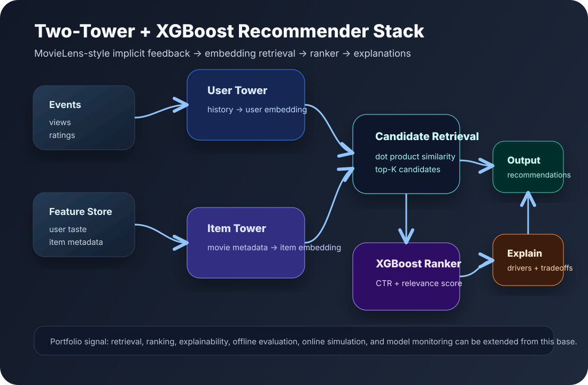

Modern recommender systems portfolio demo
Two-Tower retrieval + XGBoost ranking, explained visually.
A compact end-to-end recommendation stack: user and item embeddings retrieve candidates, a ranking model scores them, and explanations show why each movie was recommended.
12synthetic users
28MovieLens-style movies
1implemented model

Interactive demo
Random MovieLens-style user → retrieval → ranking → explanations
Start from a random user profile. The demo simulates user history, retrieves candidate movies with embedding similarity, reranks with XGBoost-style features, and generates explanations.
Pipeline trace
Model intrinsic visual
Two-Tower + XGBoost internals
One visual shows the full intrinsic behavior for the selected model: embedding retrieval on the left, ranking feature contribution on the right.
Embedding space
Two-Tower retrievalRanking explanation
XGBoost-style scoreOptional online interaction
OpenAI API setup
The public GitHub Pages version should not contain a committed API key. This demo works without one using deterministic explanations. For private testing, paste a temporary key below; it is stored only in this browser session.
No key stored. Demo explanations use local deterministic logic.
Recommended production path:
GitHub Pages frontend → serverless proxy → OpenAI API
Store OPENAI_API_KEY only in the serverless environment.